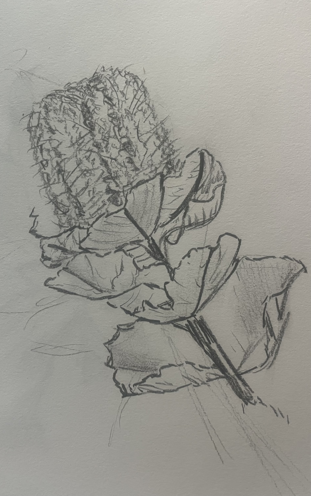

Entangled Life
Real Life
Bridle is among a host of thinkers who have sought to theorize and advance a more reciprocal way of moving in and relating to the world around us — a view of deep, interspecies kinship previously popularized in the works of Donna Haraway and Octavia Butler. More recent thinkers to pick up these ideas include Adrienne Marie-Brown, whose 2017 book Emergent Strategy urged broadening reciprocity rather than narrowing hierarchy; artist Jenny Odell, whose How to Do Nothing explored the deep power in and urgent need for decommodifying our time and attention; and novel- ist Richard Powers, whose entangled tales of plant and human life trace one interwoven story shared by human and more-than-human agents.
Recent years have also seen growing popular curiosity about fungi, foraging, birding, meditation, tarot, astrology, witchcraft and a renewed public interest in traditional ecological knowledge.Even the breakout success of an existentialist film like Everything, Everywhere, All at Once, and Ed Yong’s best- selling book An Immense World, which explores the umwelt (or worldview) of nonhuman beings, all suggests a fermenting desire to re-examine our roles and responsibilities to one another, one and all, human or otherwise.
While technology is often sold as liberatory, in practice it often produces more stark inequity,oppression, and separation

Perhaps these are the early signs of a wider rejection of the human chauvinism that has brought us to an era defined largely by social despair and ecological collapse. As new space telescopes, genetic tools, and sophisticated algorithms reveal new and exciting perspectives, opportunities and questions, some may simply see an expanding map of frontiers to master and exploit. At what point does our expanding view of the universe inspire humility instead of hubris?
If there is a perfect obverse to the notion of an eternal human empire among the stars, it might be the simple act of wandering the woods. The task of foraging is not to interrogate or control the environment but to listen and respond to envi- ronmental cues. Often, one will find that a hunch or a hint — is that slight crease in a pile of leaves a mushroom? — proves correct, as if a thought were shared with the woods. As ethnographer Ana Tsing writes, “the uncultivated habits of wild mushrooms are good to think with ... wild mushrooms press us into multispecies ecologies in which control may be impossible.”